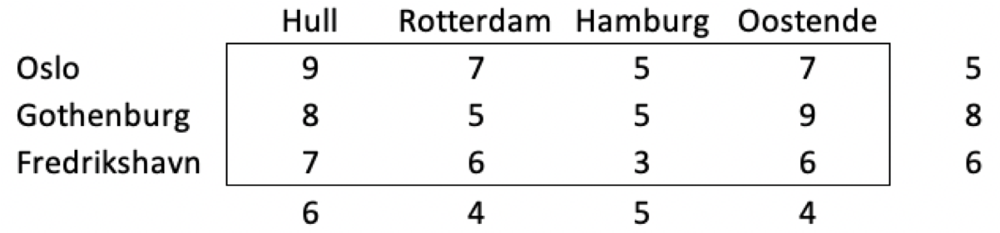
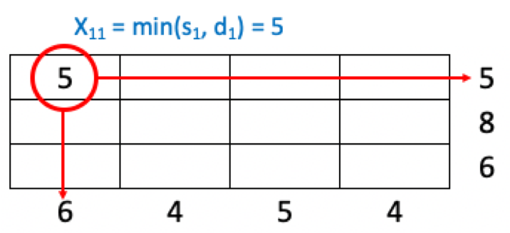
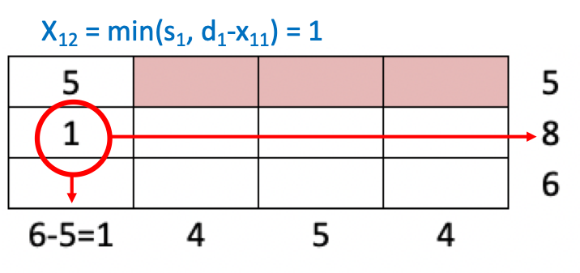
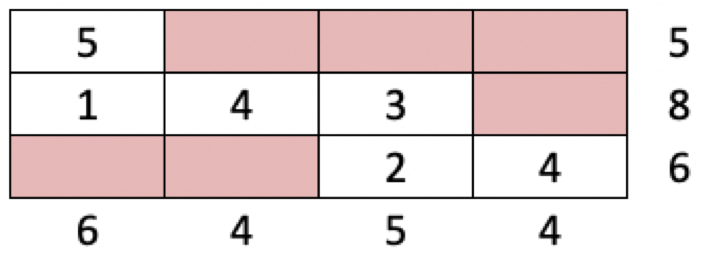

---
redirect_from:
  - "/p5-transportation/tp-initsol"
title: |-
  Finding an initial feasible solution
prev_page:
  url: /p5_transportation/tp_intro.html
  title: |-
    Part 5 - Transportation problems
next_page:
  url: /features/notebooks.html
  title: |-
    Jupyter notebooks
suffix: .md
comment: "***PROGRAMMATICALLY GENERATED, DO NOT EDIT. SEE ORIGINAL FILES IN /content***"
---

    <main class="jupyter-page">
    <div class="jb_cell">

<div class="cell border-box-sizing text_cell rendered"><div class="inner_cell">
<div class="text_cell_render border-box-sizing rendered_html">
<h1 id="Finding-an-initial-feasible-solution">Finding an initial feasible solution<a class="anchor-link" href="#Finding-an-initial-feasible-solution"> </a></h1><p>Recall from solving a general linear optimization problem, that the first step was to find an initial feasible solution, from which we could start to iterate towards the optimal solution. In the LP formulation this was, for a problem in the standard form, simple since the slack variables became the basic variables, so in practice it meant starting with zero values for the real decision variables.</p>
<p>For a transportation problem this will not work. First, we have no slack variables (because of the feasible solutions property saying that supply = demand), and second, since setting the real variables (i.e. the amount to be transported) to zero is never a fesible solution. Thus, we have to find another way to find the initial feasible solution. There are several ways to do this. In general, we can use a simple methods that typically gives an initial solution that is far from the optimum, or we can use more sophisticated methods that get us closer to the optimum. Here, we will look at three methods:</p>
<ul>
<li>The Northwest Corner method</li>
<li>The Minimum Unit Cost method</li>
<li>Vogel´s method</li>
</ul>
<p>As an example, we will use a simple transportation problem (from the 2007 exam) for optimizing transport between a number of Nordic ports (Oslo, Gothenburg and Fredrikshavn) and a number of Europeand ports (Hull, Rotterdam, Hamburg and Oostende). The parameter table is given in the table below:</p>
<p></p>
<h2 id="The-Northwest-Corner-method">The Northwest Corner method<a class="anchor-link" href="#The-Northwest-Corner-method"> </a></h2><p>The simplest method to find an initial feasible solution is by starting assigning as many transportation units as possible to the upper left cell of the table - the <em>Northwest</em> corner. The number of units will ve constrained by either the supply constraint found in the rightmost column, or the demand constraint in the bottom row, as illustrated in the figure below:</p>
<p></p>
<p>By adding 5 transport units into cell 1,1 we have used all supply available from Oslo ($s_1$), and can thus take the remaining cells in row one away. We then go one step down to cell 2,1. Here we are contrained by the supply from Gothenburg (row 2, being 8) and the remaing demand from Hull (column 1, being 6-5=1). Thus, we assign the smallest of these to the cell, as in the figure below:</p>
<p></p>
<p>We continue with this pattern, going right or down dependent on the supply and demand constraints, until we reach the right-lower corner of the table. We now have an initial fesible solution to the transportation problem, as given in the table below:</p>
<p></p>

</div>
</div>
</div>
</div>

 


    </main>
    